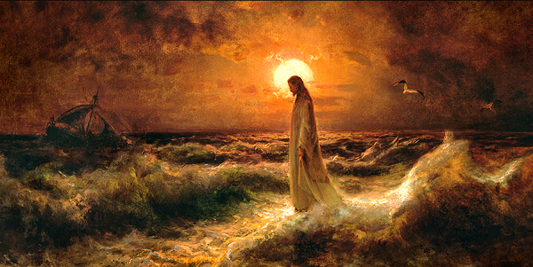

Through history, we can learn how past societies, systems, ideologies, governments, cultures and technologies were built, how they operated, and how they have changed. The rich history of the world helps us to paint a detailed picture of where we stand today. “A generation which ignores history has no past and no future.” -Robert Heinlein
The gospel of Jesus Christ is our Heavenly Father’s plan for the happiness and salvation of His children. It is called the gospel of Jesus Christ because the Atonement of Jesus Christ is central to this plan. According to His plan, our Heavenly Father sent His Son, Jesus Christ, into the world to show us how to live meaningful and happy lives and experience eternal joy after this life. Through the grace and mercy of Jesus Christ, you can become clean from sin and enjoy peace of conscience. You can become worthy to live in Heavenly Father’s presence after this life.
